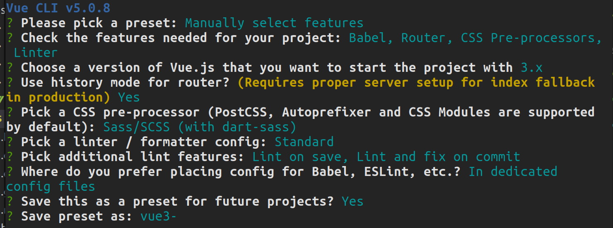

Vue3总结
学习视频：Vue后台管理系统项目实战/Vue+element-ui
学习
视频：vue3基础入门
组合式 API
setup
1 | <script> |
vue3 中的 js 的必选项，包裹所有定义的属性和方法，最后需要在 return 中将定义的所有属性和方法 return 出去才能在 \
两种定义方法的方式：
- 常规的 function：
function btn(){ console.log("ssss")} - 箭头函数：
const btn = () =>{ console.log("sss") }
ref
需要引入： import {ref} from 'vue' //组合式api
- 当 ref 里的值发生改变时，视图层会自动更新
- ref 可操作基本数据类型，也可操作复杂数据类型：对象，数组
- 建议：* ref 用来操作基本数据类型：数字，字符串。
- 用法：
const name = ref("zhangsan") - 在 js 中取值时，语法结构为：
name.value = 'lisi'
reactive
需要引入： import {reactive} from 'vue'
- reactive 同样为值创建了一个响应式的引用
- 定义基本普通类型数据不能 用 reactive，必须用 ref
- reactive 主要定义复杂数据类型，比如数组，对象
- reactive 可响应深层次的数据，比如多维数组
- reactive 返回一个响应式的 proxy 对象。
- 用法：
const product = reactive({name:'zhangsan',age:18}) - 在 js 中取值时，语法结构为：
product.name = 'lisi'
toRef
需要引入： import {toRef} from 'vue'
- toRef 也可以创建一个响应式数据
- ref 本质是 拷贝粘贴 一份数据，脱离了与原数据的交互
- ref 函数将对象中的属性变成了响应式数据，修改响应式数据是不会影响到原数据，但是会更新视图层
- toRef 的本质是引用，与原始数据有交互，修改响应式数据会影响到原数据，但是不会更新视图层。
toRefs
需要引入： import {toRefs} from 'vue'
- 用于批量设计多个数据为响应式数据，主要针对对象，
- toRefs 与原数据有交互，修改响应式数据会影响到原数据，但是不会更新视图层
- toRefs 还可以与其他响应式函数交互，更加方便处理是图层数据
- 用法：
toRefs(obj)
computed
需要引入： import {computed} from 'vue'
- 与 vue2 一致，均是用来监听数据变化
- 用法：同一个页面可以有多个计算属性
1 | <script> |
watch 侦听器
需要引入： import {watch} from 'vue'
- 与 vue2 一致，均是用来监听数据变化
- 用法： 可以有多个侦听器
1 | <script> |
watchEffect
需要引入： import {watchEffect} from 'vue'
- watchEffect 如果存在的话，在组建初始化的时候会执行一次用以收集依赖
- watch 可以获取到新值与旧值（更新前的值），而 watchEffect 获取不到
- watchEffect 不需要指定监听的属性，他会自动收集依赖，只要回调中引用到了响应式的属性，那么当这些属性变更时，这个回调都会执行，而 watch 只能监听指定的属性而作出变更。
- 用法：
1 | <script> |
shallowRef & shallowReactive
需要引入： import {shallowReactive shallowRef} from 'vue'
- shallowRef 只处理基本数据类型
- shallowReactive 只处理第一层数据
- 用法:
组件传值
1 | <script> |
生命周期
- onBeforeMount: 在挂在开始之前被调用
- onMounted: 组件挂在时调用
- onBeforeUpdate: 数据更新时调用
- onUpdate: 数据更改导致的虚拟 DOM 重新渲染。在这之后会调用该钩子
- onBeforeUnmounted: 在卸载组件实例之前调用
- onUnmounted: 卸载组件实例后调用
- onErrorCaptured: 当捕获一个来自子孙组件的错误时被调用
vue3 的抽离封装
vue3 中的任何一个组合式 api 都可以单独抽离出去在另一个文件，最后只需要回归到 setup（）中即可。
一、Vue 准备
1. 项目安装依赖
1. 前端依赖
- 创建 vue 项目：
vue create <projectName>并选择 Manually select features*  - 安装依赖：
- 网络请求：
npm i axios -S - 读取网络请求的参数：
npm i querystring -S - 图表：
npm i echarts -S - element ui:
npm i element-plus -S - 日期格式化：
npm i dayjs -Snpm i moment -S - 格式化 css：
npm i normalize.css -S
- 网络请求：
2. 后端服务 (可根据需要安装)
- 技术：nodejs+mysql+Express
- Node. js 的 Web 应用架构：
npm i express -S - 跨域资源共享：
npm i cors -S - 模拟接口：
npm i mockjs -Snpm install mockjs
.
3. 项目初始化
- 删除无用的组建
- css 初始化
- iconfont 图标
- axios 请求二次封装
All articles in this blog are licensed under CC BY-NC-SA 4.0 unless stating additionally.